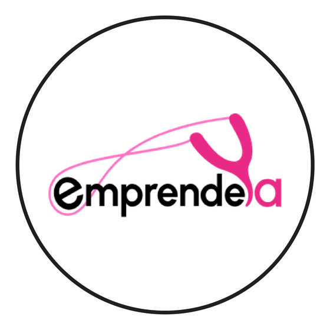
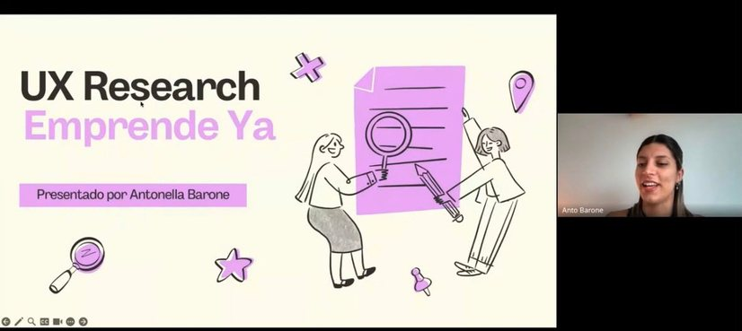
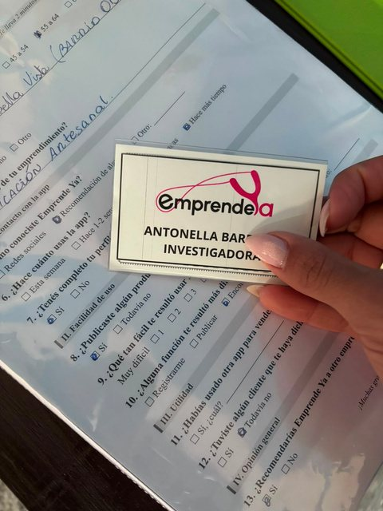
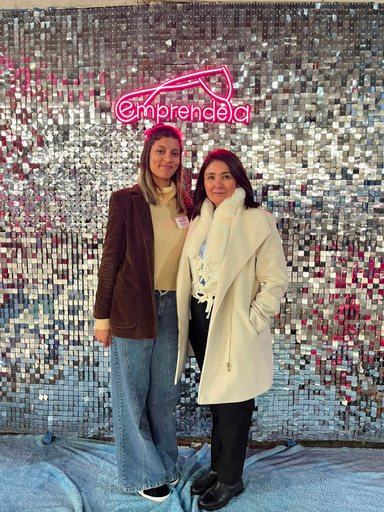
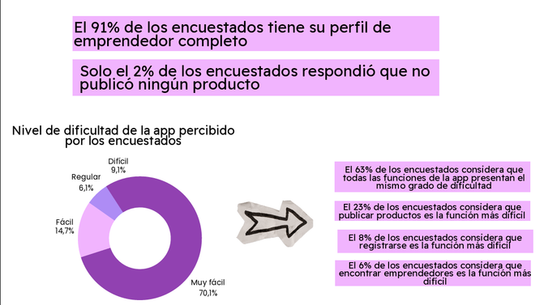
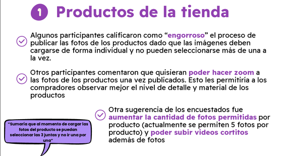

Proyecto 1 · UX Research
Emprende Ya
Investigación exploratoria mixta con emprendedores usuarios de la app, hecha durante su evento de lanzamiento.
Contexto
&
Objetivo general
Emprende Ya es una app fundada por Nancy Mendoza que funciona como un mapa social de emprendedores de barrio: conecta a quienes producen o venden con personas de la zona que buscan sus productos o servicios, permitiendo descubrir, contactar y apoyar el comercio local desde el celular.
Cuando me sumé al proyecto, la app ya estaba en uso por parte de los usuarios, pero todavía no había tenido su lanzamiento oficial.
La investigación fue exploratoria y tuvo como objetivo conocer la experiencia de los usuarios emprendedores al usar la app: identificar qué tan intuitiva y fácil les resultaba, si tenían experiencia previa con aplicaciones similares, y relevar sugerencias de mejora.
Primer paso: reunión con stakeholders
La investigación comenzó con una reunión virtual con la fundadora de la aplicación y su equipo, donde expuse el objetivo y el valor que tendría la investigación, y comenté el procedimiento y las metodologías a utilizar. Por su parte, ella me explicó en profundidad algunos detalles de la aplicación y me brindó la información con la que contaban hasta el momento sobre sus usuarios.
Además, me informó que tenía previsto un evento presencial para inaugurar oficialmente la app, por lo que acordamos que esa instancia sería una buena oportunidad para llevar a cabo el trabajo de campo.

Segundo paso: enfoque metodológico e instrumentos
La investigación fue mixta: se utilizaron técnicas de investigación cuantitativas y cualitativas. Las primeras me permitieron relevar de forma sistemática datos demográficos y detectar patrones y frecuencias en las respuestas, mientras que las segundas me aportaron profundidad, permitiendo comprender el porqué detrás de esas respuestas y, a su vez, dieron lugar a aspectos que no habían sido considerados previamente y surgieron espontáneamente por parte de los participantes.
Los instrumentos utilizados fueron: encuestas en papel y entrevistas semiestructuradas.
Tercer paso: trabajo de campo
El relevamiento se llevó a cabo de forma presencial durante el evento de lanzamiento de la aplicación.
En total, se encuestaron 55 emprendedores usuarios de la app y se realizaron 5 entrevistas en profundidad, lo que permitió combinar una mirada amplia de la población con un análisis más detallado de las experiencias individuales.


Cuarto paso: digitalización y análisis de datos
Se digitalizaron los datos obtenidos en las encuestas físicas y se analizaron en profundidad las entrevistas realizadas, lo que permitió construir un perfil demográfico de los usuarios que complementó la información con la que ya contaba el equipo de Emprende Ya.
A su vez, el análisis dejó en evidencia una serie de puntos de mejora que no habían sido considerados en el desarrollo original de la app, tales como: la posibilidad de subir más de una foto y más de un producto por publicación, la necesidad de sumar categorías y filtros (por precio, promociones y destacados), cuestiones vinculadas al envío, y ajustes de diseño en funciones que los usuarios no lograban visualizar con facilidad por su tamaño.
Quinto paso: presentación de resultados
Los hallazgos obtenidos fueron traducidos en insights y organizados en una presentación, que fue expuesta en una reunión con la fundadora de la aplicación. A partir de ese encuentro, las sugerencias de carácter técnico fueron derivadas al equipo de programadores para su posterior implementación, cerrando así el ciclo de la investigación con un impacto concreto en el desarrollo del producto.

